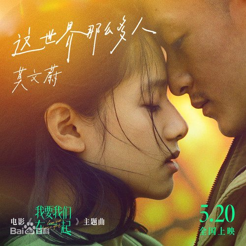

-
怦然心动
《怦然心动》是由罗伯·莱纳执导，玛德琳·卡罗尔、卡兰·麦克奥利菲主演影片。该片根据文德琳·范·德拉安南的同名原著小说改编，描述了青春期中男孩女孩之间的有趣战争。于2010年8月6日在美国上映。
-
悲伤逆流成河
《悲伤逆流成河》是根据郭敬明同名小说改编，由落落执导，赵英博、任敏、辛云来、章若楠、朱丹妮主演的青春校园电影。该片主要讲述了上海弄堂里一起长大的一对年轻人齐铭、易遥在校园内外情愫纠葛，并在一次次的流言蜚语中卷入校园欺凌，最终以悲剧结尾的故事。该片于2018年9月21日上映，2020年8月14日复映。
- 
我要我们在一起
《与我十年长跑的女友明天要嫁人了》改编，讲述了吕钦扬和凌一尧的十年爱情故事。该片于2021年5月20日在中国大陆上映。
-
你的婚礼
《你的婚礼》是一部由韩天执导的爱情电影，讲述了尤咏慈与周潇齐之间长达15年的爱情故事。